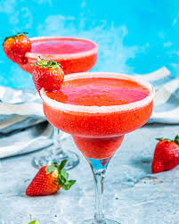

The Strawberry Daquiri
Home

Description
This strawberry daquiri is sweet, refreshing and smoother than my first attempt at HTML. Ideal for hot days, imaginary beaches and celebrating when your links finally work.
Best enjoyed after git add ., git commit -m "it works", and git push finally do what you expected.
Ingredients
- 1 lime wedge
- Salt, for rim
- 1 (14 ounce) package frozen sliced strawberries
- 2 cups ice cubes
- ½ cup white rum
- ½ cup white sugar
- ½ cup fresh lime juice
- Fresh strawberries, for garnish
Steps
- Wipe rim of glass with lime widge. Dip rim into salt
- Blend frozen sliced strawberries, ice cubes, white rum, sugar and lime juice in a blender until smooth, adding more ice as needed.
- Pour mixture into prepared glass
- Garnish with fresh strawberries